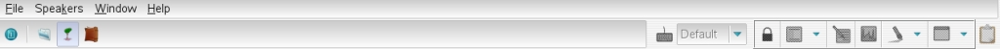

Menu And Tool Bars
Screenshot

Description
All TranscriberAG functionalities are accessible through:
- the Menu Bar
gives access to all possible actions of TranscriberAG. It's
composed of the following tabs:
- the Tool Bar
allows quick access to the most useful functionalities through buttons.